7 Знакомство с веб-интерфейсом¶
7.1 Вход в веб-интерфейс¶
Основным интерфейсом устройства является веб-интерфейс, также называемый «Ак Шумкар Security Assistant» (GSA). Доступ к веб-интерфейсу можно получить следующим образом:
Откройте веб-браузер.
Введите IP-адрес веб-интерфейса устройства.
Кончик
IP-адрес веб-интерфейса отображается в приглашении для входа в консоль (см. главу) 6.1.2.2.1) или в меню администрирования ГСН при выборе О и работа Входить.
Войдите в систему под учетной записью веб-администратора, созданной во время установки (см. главу 4).
7.2 Использование информационных панелей¶
Многие страницы веб-интерфейса содержат информационные панели вверху страницы. Эти информационные панели состоят из индивидуально составленных и организованных диаграмм и таблиц. Доступные диаграммы и таблицы зависят от содержимого страницы.
Для каждой страницы имеются настройки диаграмм и/или таблиц по умолчанию. Настройки по умолчанию можно восстановить, нажав справа над приборной панелью.

7.2.1 Добавление дисплея информационной панели¶
Новый дисплей можно добавить на информационную панель следующим образом:
Нажмите
 справа над приборной панелью.
справа над приборной панелью.Выберите нужный дисплей из раскрывающегося списка (см. Рис. 7.1).
Кончик
Поле ввода над списком можно использовать для фильтрации параметров.
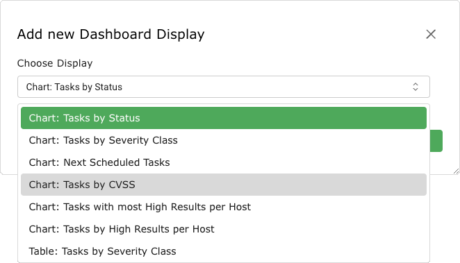
Рис. 7.1 Добавление дисплея¶
Нажмите Добавить.

7.2.2 Удаление дисплея информационной панели¶
Отображение можно удалить, нажав 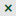


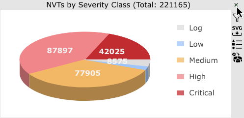
Рис. 7.2 Удаление отображения¶
7.2.3 Редактирование отображения информационной панели¶
В зависимости от дисплея существует несколько опций, которые можно выбрать, переместив курсор к правому краю дисплея (см. Рис. 7.3):

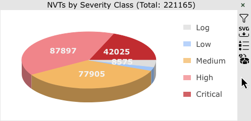
Рис. 7.3 Выбор дополнительных опций дисплея¶
Примените фильтр к диаграмме или таблице. Фильтр необходимо предварительно настроить и сохранить для отображаемого типа ресурса (см. главу 7.3.2).
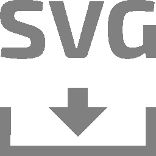
Загрузите диаграмму в видеофайл SVG (только для диаграмм).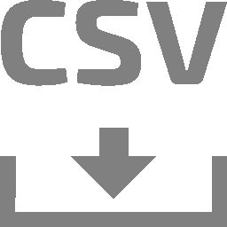
Загрузите таблицу в формате CSV (только для таблиц).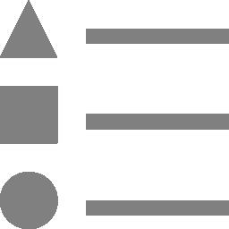
Скрыть или показать легенду (только для диаграмм).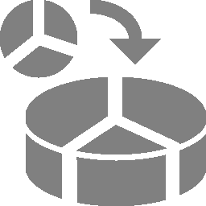
Переключение между 2D- и 3D-презентацией (только для диаграммы).


7.2.4 Организация отображений информационных панелей¶
На Панели мониторинга На странице панели мониторинга можно группировать и упорядочивать изображения. Дисплеи можно объединять индивидуально, но есть также предопределенные информационные панели, которые можно выбрать.
Всего может быть до 10 панелей. По умолчанию есть только Обзор информационная панель, на которой представлен краткий обзор задач CVE и VT (см. Рис. 7.4).

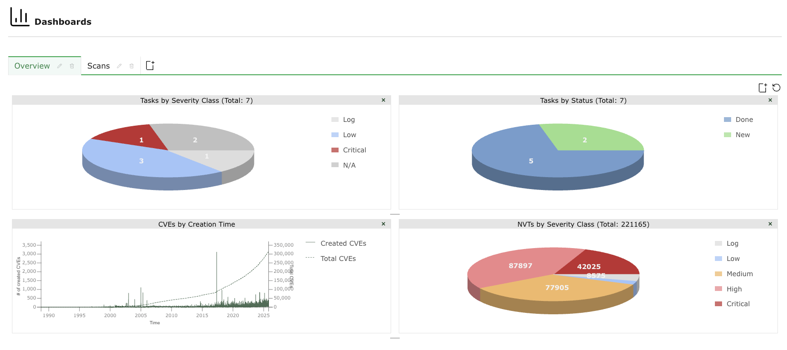
Рис. 7.4 Обзорная панель мониторинга¶
7.2.4.1 Добавление новой панели мониторинга¶
Новую панель мониторинга можно создать следующим образом:
Нажмите
во вкладках над информационной панелью (см. Рис. 7.5).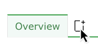
Рис. 7.5 Добавляем новую панель мониторинга¶
Введите имя информационной панели в Название информационной панели поле ввода.
Выберите дисплеи, которые должны отображаться по умолчанию, из Начальные дисплеи раскрывающийся список (см. Рис. 7.6).
Доступны следующие наборы дисплеев по умолчанию:
По умолчанию: панель мониторинга содержит те же дисплеи, что и панель обзора.
Дисплеи сканирования: панель мониторинга содержит дисплеи, касающиеся задач, результатов и отчетов.
Отображения активов: панель мониторинга содержит дисплеи, касающиеся хостов и операционных систем.
Отображения SecInfo: панель Диптихи содержит отображение, сети VT, CVE и рекомендации CERT-Bund.
Пусто: на информационной панели нет дисплеев.
Кроме того, можно выбрать уже существующие информационные панели.
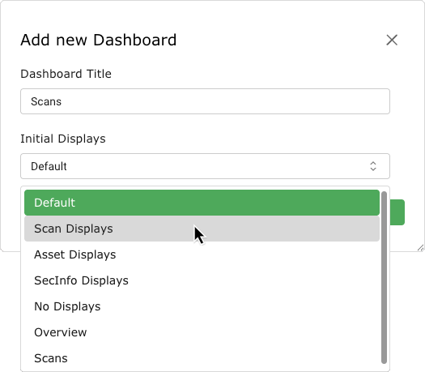
Рис. 7.6 Добавляем новую панель мониторинга¶
Нажмите Добавить.
→ Панель инструментов добавляется и отображается на панели вкладок (см. Рис. 7.7).
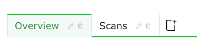
Рис. 7.7 Вкладки доступных информационных панелей¶


7.2.4.2 Редактирование панели мониторинга¶
Дисплеи можно добавлять на информационную панель или удалять с нее, как описано в главах. 7.2.1 и 7.2.2.
Отображения на информационной панели можно редактировать, как описано в главе 7.2.3.
Панель управления можно переименовать следующим образом:
Нажмите
 во вкладке дашборда в панели вкладок (см. Рис. 7.8).
во вкладке дашборда в панели вкладок (см. Рис. 7.8).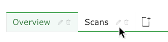
Рис. 7.8 Переименование или удаление панели мониторинга¶
Измените имя в Название информационной панели поле ввода.
Нажмите Сохранять.

7.2.4.3 Удаление панели мониторинга¶
Панель управления можно удалить, нажав кнопку  во вкладке панели управления (см. Рис. 7.8).
во вкладке панели управления (см. Рис. 7.8).
7.3 Фильтрация содержимого страницы¶
Практически каждая страница веб-интерфейса предлагает возможность фильтровать отображаемый контент.
Выражения фильтра состоят из ключевого слова, оператора и значения. Несколько выражений фильтра можно свободно комбинировать.
Примечание
Фильтр является контекстно-зависимым, что означает, что возможные выражения фильтра зависят от открытой в данный момент страницы.
Фильтр не чувствителен к регистру. Перед применением фильтра все заглавные буквы преобразуются в строчные.
7.3.1 Использование панели фильтров¶
Полоса фильтров в правом верхнем углу (см. Рис. 7.9) предлагает следующие варианты:
Выражение фильтра, которое должно быть применено к открытой в данный момент странице, можно ввести непосредственно в поле ввода. Необходимо использовать специальный синтаксис фильтра (см. главу 7.3.3).
- Удалите текущий примененный фильтр.
 Ознакомьтесь с соответствующим главой руководства пользователя.
Ознакомьтесь с соответствующим главой руководства пользователя.- Измените фильтр, который должен быть применен к открытой в данный момент странице (см. ниже).
Сохраненный фильтр можно применить, выбрав его из раскрывающегося списка.


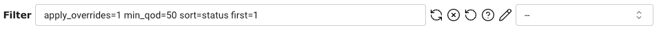
Рис. 7.9 Панель фильтров вверху страницы.¶
Фильтр можно изменить (и сохранить) следующим образом:
Нажмите
в панели фильтров.Выберите и измените выражения фильтра (см. Рис. 7.10).
Выражения фильтра, которые следует искать, можно ввести в поле Фильтр поле ввода.

Рис. 7.10 Настройка фильтра¶
Если фильтр необходимо сохранить для будущего использования, активируйте Сохранить фильтр как установите флажок и введите имя фильтра в поле ввода.
Нажмите Обновлять.
→ Фильтр применяется и, если выбран, сохраняется. Сохраненный фильтр можно применить с помощью раскрывающегося списка на панели фильтров (см. Рис. 7.11).
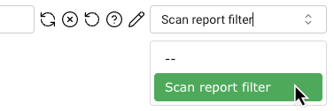
Рис. 7.11 Выбор сохраненного фильтра¶

Кончик
Если на странице всегда должен быть активирован определенный фильтр, его можно установить в качестве фильтра по умолчанию в настройках пользователя (см. главу 7.7).
7.3.2 Создание фильтра на Фильтры Страница¶
Фильтры можно создавать с помощью Фильтр страницу следующим образом:
Выбирать Конфигурация > Фильтры в меню.
Нажмите
в нижней части шкафа.Заполните поля ввода (см. Рис. 7.12):
- Имя
Имя можно выбрать свободно. Если возможно, следует выбрать описательное имя.
Этот поле ввода является обязательным.
- Комментарий
Необязательный комментарий позволяет указать дополнительные детали и справочную информацию.
- Срок
Выражения фильтра, которые следует применять (см. главу 7.3.3).
Если термин не введен, базовый фильтр
первый=1 ряды=10 сортировка=имяиспользуется.- Тип
Тип ресурса, к которому следует применить фильтр.
Примечание
Фильтр можно использовать только на той странице, для которой он создан.
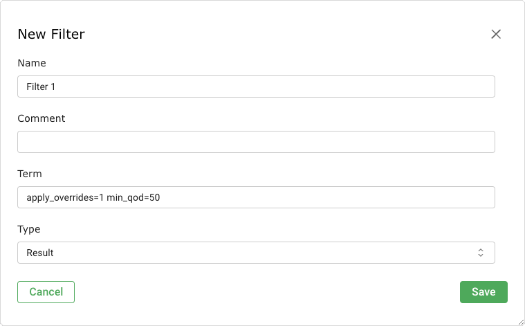
Рис. 7.12 Создание нового фильтра¶
Нажмите Сохранять.
→ Фильтр можно применить с помощью раскрывающегося списка на панели фильтров (см. Рис. 7.13).
Рис. 7.13 Выбор сохраненного фильтра¶

Кончик
Если на странице всегда должен быть активирован определенный фильтр, его можно установить в качестве фильтра по умолчанию в настройках пользователя (см. главу 7.7).
7.3.3 Фильтровать выражения¶
При применении выражения фильтра отображаются в левом нижнем углу страницы (см. Рис. 7.14).
Фильтр использует особый синтаксис, который необходимо учитывать.

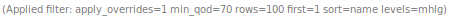
Рис. 7.14 Примененные выражения фильтра¶
Кончик
Полный список всех ключевых слов фильтра с возможными значениями, отсортированными по типу страницы/ресурса, можно найти. здесь.
7.3.3.1 Глобальные ключевые слова¶
В общем, указание следующих ключевых слов всегда возможно.
Примечание
Эти ключевые слова применяются ко всему запросу фильтра и должны упоминаться только один раз.
Пример: фильтровать запросы типа имя~тест и ряды=20 или имя~защита и строк = 30 не допускаются.
В этом случае только строк = 30 будет применяться.
рядыКоличество строк, отображаемых на странице.
Значение по умолчанию:
ряды=10.Ввод значения
-1отобразит все результаты.Ввод значения
-2будет использовать значение, установленное в настройках пользователя для Строков на странице (см. главу 7.7).
Примечание
С использованием
строки=-1может вызвать проблемы с производительностью, когда необходимо обработать большие объемы данных.Если страница загружается долго, следует использовать другой фильтр строк.
первыйСпецификация первого отображаемого ресурса.
Пример:
ряды=10 первый=11отображает ресурсы с 11 по 20.сортироватьСпецификация столбца, используемого для сортировки ресурсов. Ресурсы отсортированы по возрастанию.
Пример:
сортировка=имясортирует ресурсы по имени.Сортировку также можно выполнить, щелкнув заголовок столбца.
После применения фильтра прописные буквы в именах столбцов заменяются на строчные, а пробелы заменяются на подчеркивания.
Типичные столбцы:
имятяжестьхозяинрасположениекод(качество обнаружения)комментариймодифицированныйсозданный
Примечание
сортироватьне применимо для страниц сведений об отчете (см. главу 10.2.1).обратная сортировкаСпецификация столбца, используемого для сортировки ресурсов. Те же правила, что и для
сортироватьприменить (см. выше). Ресурсы отсортированы по убыванию.Примечание
обратная сортировкане применимо для страниц сведений об отчете (см. главу 10.2.1).ярлыкВыбор ресурсов с определенным тегом (см. главу 7.4).
Либо только имя тега (
тег="сервер") или определенное значение тега (тег="сервер=почта") можно использовать для фильтрации.Регулярные выражения также разрешены.
С помощью тегов можно создавать собственные категории и использовать их в фильтрах. Это обеспечивает универсальную и детальную функциональность фильтра.
tag_idВыбор ресурсов с определенным тегом (см. главу 7.4).
Тег UUID используется для фильтра. UUID тега можно найти на странице описания теге (см. главу). 7.4.4).
Фильтр остается действительным, даже если имя тега изменено.
7.3.3.2 Операторы фильтра¶
При указании выражений фильтра используются следующие операторы:
=равно, напримерряды=10~содержит, напримеримя~админ<меньше, чем, напримерсоздано<-1w→ старше недели>больше, чем, напримерсоздано>-1w→ новее неделирегулярное выражениерегулярное выражение, напримеррегулярное выражение 192.168.[0-9]+.[0-9]
Следующие операторы нет поддерживается:
<=>=( )
Есть несколько особых случаев:
Если значение не следует
=, отображаются все ресурсы без значения для указанного ключевого слова.Пример:
комментарий=показывает все ресурсы без комментариев.Если значение должно быть найдено, но не определено, в каком столбце следует искать, поиск выполняется по всем столбцам.
Пример:
=192.168.15.5проверяет, содержит ли хотя бы один столбец заданное значение.Выражения фильтра обычно объединяются или объединяются. Это также можно указать с помощью логического оператора
или.Для достижения комбинации «и» используется логический оператор
идолжно быть указано.Пример:
изменено>01.01.2019 и имя=услугиирешено раньшеили, что означаетх и й или а и брешено(х и й) или (а и б)Такие термины, как
х и (а или б)нужно написать какх и а или х и б.С использованием
нетотрицает фильтр.Пример:
нет ~192.168.81.129показывает все ресурсы, которые не содержат «192.168.81.129».
7.3.3.3 Текстовые фразы¶
Обычно можно указать текстовые фразы, которые ищут.
Следующие примеры демонстрируют аспекты, которые следует учитывать:
переполнениеНаходит все ресурсы, содержащие слово «переполнение».
Это относится как к «Переполнению», так и к «Переполнению буфера».
удаленный эксплуатироватьНаходится все ресурсы, содержащие слова «remote» или «exploit» или и то, и другое.
Ресурсы не обязательно должны находиться в одном столбце.
удаленный и эксплуатироватьНаходит все ресурсы, содержащие как «удаленный», так и «эксплойт».
Ресурсы не обязательно должны находиться в одном столбце.
"удаленный эксплуатировать"Находит все ресурсы, содержащие строку «удаленный эксплойт».
Ищется точная строка, а не отдельные слова.
регулярное выражение 192.168.[0-9]+.[0-9]Находит заданное регулярное выражение.
7.3.3.4 Характеристики времени¶
Указания времени в фильтре могут быть абсолютными или относительными.
- Указание абсолютного времени
Спецификация абсолютного времени имеет формат
ГГГГ-ММ-ДДТЧчММ, например, 2024-10-02T13h50.Если время не указано, автоматически будет установлено время 12:00.
Пример:
Изменено>01.09.2024T15h00 и Изменено<2024-09-30T15h00показывает ресурсы, которые были изменены между указанными датами.- Указание относительного времени
Спецификации относительного времени всегда рассчитываются относительно текущего времени.
Прошедшее время указывается со знаком минус (
-). Указание времени без ведущего символа интерпретируется как будущее.Для периодов времени можно использовать следующие буквы:
с: второйм: минутачас: часд: деньш: неделяМ: месяц (30 дней)й: год (365 дней)
Пример:
создано>-5dпоказывает ресурсы, созданные за последние 5 дней.Примечание
Такие комбинации, как
5д1чне разрешены, но должны быть заменены на121 час.
7.3.4 Примеры выражений фильтров¶
Вот несколько примеров фильтров:
127.0.0.1показывает любой ресурс, который имеет «127.0.0.1» в любом месте текста любого столбца.127.0.0.1 Янапоказывает любой ресурс, имеющий «127.0.0.1» или «iana» в любом месте текста, любой столбец.127.0.0.1 и Янапоказывает любой ресурс, который имеет «127.0.0.1» и «iana» в любом месте текста любого столбца.=127.0.0.1показывает любой ресурс, точное имя которого в любом столбце имеет «127.0.0.1».нет ip:192.168.100.[0-9]{1,3}показывает любой ресурс с IP-адресом, который начинается не с «192.168.100.», за которым следует одно или два трех числа от 0 до 9.регулярное выражение 192.168.[0-9]+.[0-9]показывает любой ресурс, строку стиля IP, которая начинается с «192.168» в любом месте текста любого столбца.имя = локальный хостпоказывает любой ресурс с прекрасным именем «localhost».имя~местноепоказывает любой ресурс со словом «local» в любом месте по имени.имя:^местныйпоказывает любой ресурс, имя которого начинается со слова «local».список_портов~tcpпоказывает любой ресурс, в списке портов которого есть «tcp».изменено>03.04.2023 и изменено<05.04.2023показывает любой ресурс, который был изменен между 03.04.2023 0:00 и 05.04.2023 0:00.создано>2023-04-03T13h00показывает любой ресурс, созданный после 13:00 3 апреля 2023 г.ряды=20 первый=1 сортировка=имяпоказывает первые 20 ресурсов, отсортированных по столбцу Имя.создано>-7dпоказывает любой ресурс, созданный за последние 7 дней.tag="geo:long=52.2788"показывает любой ресурс, имеющий тег с именем «geo:long» и значением «52.2788».тег~геопоказывает любой ресурс, у которого есть тег с именем, содержащий «geo».
7.3.5 Управление фильтрами¶
Страница списка
Все существующие фильтры можно отобразить, выбрав Конфигурация > Фильтры в меню (см. Рис. 7.15).
Для всех фильтров отображается следующая информация:
- Имя
Имя, присвоенное фильтру при его создании.
- Срок
Выражения фильтра, образующие фильтр (см. главу 7.3.3).
- Тип
Тип ресурса, к которому можно применить фильтр.
Для всех фильтров доступны следующие действия:
 Переместите фильтр в мусорное ведро.
Переместите фильтр в мусорное ведро.- Отредактируйте фильтр.
 Клонируйте фильтр.
Клонируйте фильтр. Экспортируйте фильтр как файл XML.
Экспортируйте фильтр как файл XML.
Примечание
Нажав или под списком фильтров можно переместить в корзину или экспортировать более одного фильтра одновременно.
Раскрывающийся список используется для выбора того, какие фильтры будут перемещены в корзину или экспортированы.

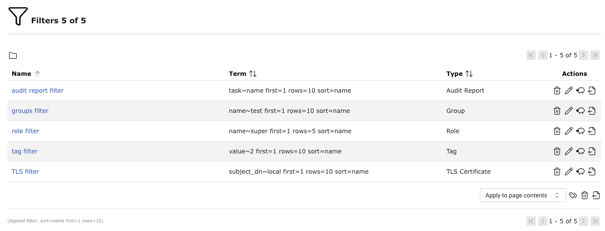
Рис. 7.15 Управление фильтрами¶
Страница раскрыта
Нажмите на название фильтра, чтобы отобразить подробную информацию о нем.
Нажмите  чтобы открыть страницу сведений о фильтре.
чтобы открыть страницу сведений о фильтре.
Доступны следующие вкладки:
- Информация
Общая информация о фильтре, включая термин, тип и место использования фильтра.
- Пользовательские теги
Присвоенный тег (см. главу 7.4).
- Разрешения
Назначенные разрешения (см. главу 8.4).
В левом верхнем углу пульта доступны следующие действия:
- Ознакомьтесь с соответствующим главой руководства пользователя.
 Показать страницу со списком всех фильтров.
Показать страницу со списком всех фильтров.- Создайте новый фильтр (см. главу 7.3.1).
- Клонируйте фильтр.
- Отредактируйте фильтр.
- Переместите фильтр в мусорное ведро.
- Экспортируйте фильтр как файл XML.
7.4 Использование тегов¶
Теги — это фрагменты информации, которые можно связать с одним или несколькими ресурсами одного типа. Их можно использовать для фильтрации (см. главы 7.3 и 7.3.3.1).
7.4.1 Создание тега для одного ресурса¶
Тег для одного ресурса можно создать и связать с ним напрямую следующим образом:
Откройте страницу сведений о ресурсе, щелкнув имя ресурса, а затем
.Нажмите на описание Пользовательские теги.
Нажмите
на правой стороне.Заполните поля ввода:
- Имя
Имя можно выбрать свободно. Если возможно, следует выбрать описательное имя.
Этот поле ввода является обязательным.
- Комментарий
Необязательный комментарий позволяет указать дополнительные детали и справочную информацию.
- Ценить
Значение может быть присвоено для более детального определения.
Пример: тег с именем
отделениесо значениемпроизводствоможет быть привязан к ресурсу; тег также называетсяотделениено со значениемпродажаможно связать с другим ресурсом.- Тип ресурса
Тип ресурса, с которым должен быть связан тег.
Этот раскрывающийся список доступен только для чтения, поскольку тег создается непосредственно для ресурса.
- Ресурсы
Выбор конкретного ресурса выбранного типа ресурса.
Этот раскрывающийся список доступен только для чтения, поскольку тег создается непосредственно для ресурса.
- Активный
Выбор, должен ли тег быть доступен для использования или нет.
Нажмите Сохранять.
7.4.2 Создание тега для нескольких ресурсов¶
Тег можно создать и напрямую связать с несколькими ресурсами одного типа (например, задачами, целями, сканерами) следующим образом:
Откройте страницу списка типа ресурса.
Отфильтруйте список так, чтобы отображались только те ресурсы, которые должны получить этот тег.
Выберите область ресурсов, к которым должен быть привязан тег, из раскрывающегося списка под списком ресурсов (см. Рис. 7.16).
Примечание
Применить к содержимому страницы связывает тег со всеми ресурсами, видимыми на текущей странице.
Применить ко всем отфильтрованным связывает тег со всеми ресурсами, на которые распространяется примененный в данный момент фильтр, даже если они не видны на текущей странице.
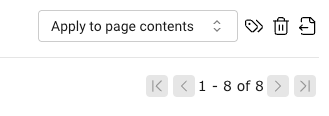
Рис. 7.16 Выбор ресурсов¶
или

Выбирать Применить к выбору из раскрывающегося списка под списком ресурсов.
В Действия столбце активируйте флажки тех ресурсов, которые должны получить тег.
Выберите тег из Выберите тег раскрывающийся список (см. Рис. 7.17).
Примечание
Можно выбрать только теги, созданные для выбранного типа ресурса.
Альтернативно новый тег можно создать, нажав кнопку
.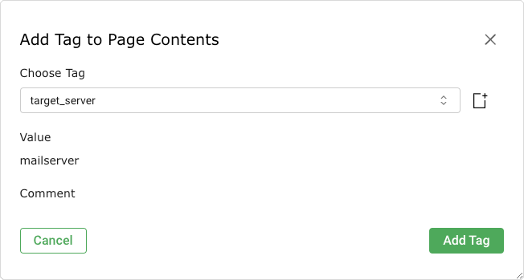
Рис. 7.17 Выбор тега для нескольких ресурсов¶
Нажмите Добавить тег.


7.4.3 Создание тега на Теги Страница¶
Теги можно создавать без привязки непосредственно к одному или используемым ресурсам с помощью Теги страницу следующим образом:
Выбирать Конфигурация > Теги в меню.
Нажмите
в нижней части шкафа.Заполните поля ввода (см. Рис. 7.18):
- Имя
Имя можно выбрать произвольно. Если возможно, следует выбрать описательное имя.
Этот поле ввода является обязательным.
- Комментарий
Необязательный комментарий Позволяет указать дополнительную информацию и справочную информацию.
- Ценить
Значение может быть использовано для более детального определения.
Пример: тег с именем
отделениесо значениемпроизводствоможет быть применен к ресурсу; тег также называетсяотделениено так важнопродажаможно связаться с другим ресурсом.- Тип ресурса
Тип ресурса, с которым должен быть связан тег.
- Ресурсы
Выбор типа ресурса.
- Активный
По выбору тег должен быть доступен для использования или отсутствовать.
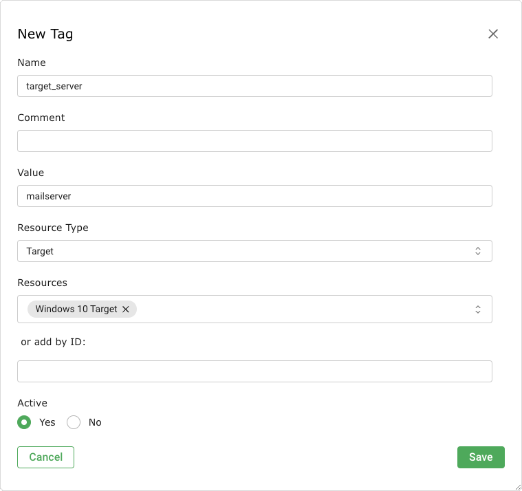
Рис. 7.18 Создание нового тега¶
Нажмите Сохранять.

7.4.4 Управление тегами¶
Страница списка
Все существующие теги можно отобразить, выбрав Конфигурация > Теги в меню.
Для всех тегов отображается следующая информация:
- Имя
Имя, присвоенное тегу при его создании.
- Ценить
Значение, привлеченное для тега при его создании.
- Активный
Индикация того, доступен ли тег для использования или нет.
- Тип ресурса
Тип ресурса, с которым может быть связан тег.
- Количество ресурсов
Количество ресурсов, с которыми в данный момент связан тег.
- Модифицированный
Дата и время последнего изменения тега.
Для всех тегов доступны следующие действия:
- Переместите тег в корзину.
- Отредактируйте тег.
- Клонируйте тег.
- Экспортируйте тег как файл XML.


Примечание
Нажав или под списком тегов можно переместить в корзину или экспортировать более одного тега одновременно.
Раскрывающийся список используется для выбора тегов, которые необходимо переместить в корзину или экспортировать.
Страница раскрыта
Нажмите на название тега, чтобы отобразить подробную информацию о теге.
Нажмите чтобы открыть страницу, откройте о теге.
Доступны следующие вкладки:
- Информация
Общая информация о теге, включая значение, тип ресурса и то, активен он или нет.
- Назначенные предметы
Ресурсы, с международным участием в данный момент связаны тегом. Ресурсы предоставляются только в том случае, если тег активен.
- Разрешения
Назначенные разрешения (см. главу 8.4).
В левом верхнем углу пульта доступны следующие действия:
- Ознакомьтесь с соответствующим главой руководства пользователя.
- Показать страницу со списком всех тегов.
- Создать новый тег (см. главу 7.4.3).
- Клонируйте тег.
- Отредактируйте тег.
- Переместите тег в корзину.
- Экспортируйте тег как файл XML.
7.5 Использование мусорной корзины¶
Мусорное ведро страница открыла выбор Администрирование > Корзина в меню. В нем перечислены все ресурсы, находящиеся в настоящее время в корзине, сгруппированные по типам ресурсов.
Примечание
Ресурсы в корзине еще не удаленными. Они удаляются окончательно только тогда, когда их вручную удаляют из корзины или когда вся корзина очищается.
Содержание В таблице показаны все типы ресурсов, объекты которые в данный момент находятся в мусорном корзине, а также включают количество объектов (см. Рис. 7.19).
Всю мусорную корзину можно использовать, нажав кнопку Пустой мусор.

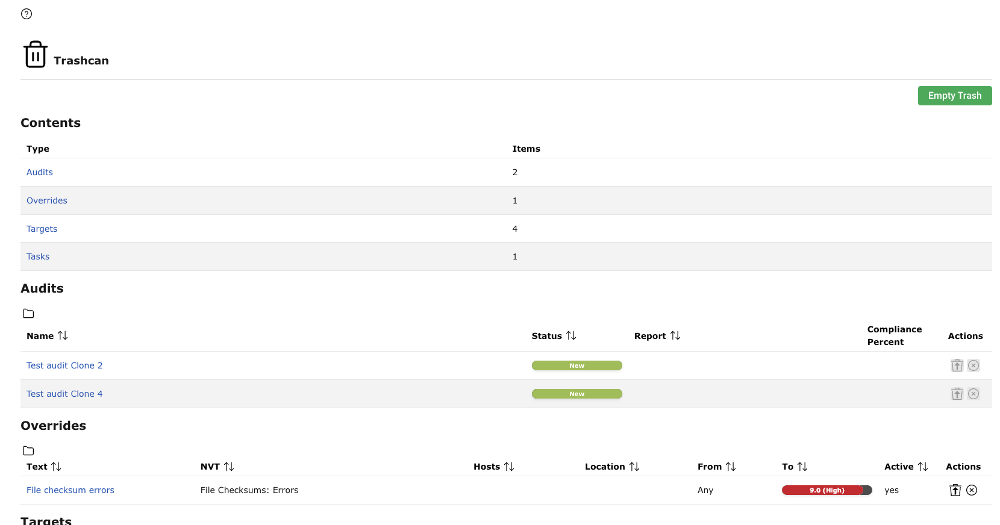
Рис. 7.19 Содержимое мусорной корзины¶
При необходимости укажите тип порта, соответствующий соответствующему разделу. Здесь можно управлять партнерами (см. Рис. 7.20):
Щелчок
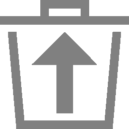
перемещает ресурс из корзины и возвращает его на обычную страницу. Ресурс невозможно восстановить, если он зависит от другого ресурса в мусорной корзине. В этом случае значок неактивен.Щелчок
полностью восстановить ресурс из системы.
Ресурс невозможно удалить, если от него зависит другой ресурс в корзине.
В этом случае значок неактивен.


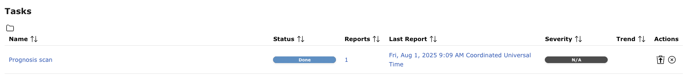
Рис. 7.20 Восстановление или удаление ресурса, находящегося в корзине¶
7.6 Отображение очистки ленты¶
Статус синхронизации всей информации SecInfo можно отобразить, выбрав Администрирование > Статус фида в меню.
Отображается следующая информация (см. Рис. 7.21):
- Тип
Тип корма (НТВ, СКАП, СЕРТ или ГВМД_ДАННЫЕ).
- Содержание
Тип информации, предоставляемой фидом.
- Источник
Имя канала службы, который используется для синхронизации SecInfo.
- Версия
Номер версии данных фида.
- Статус
Информация о состоянии канала, например время с момента последнего обновления.
Если в данный момент достигнуто обновление фида, Обновление в процессе… отображается. Этот статус отображается для всех каналов, даже если в данный момент обновляется только один канал.

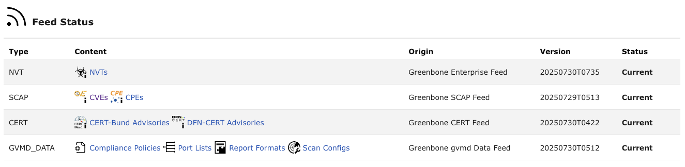
Рис. 7.21 Отображение очистки ленты¶
7.7 Изменение настроек пользователя¶
Каждый пользователь устройства может управлять своими настройками веб-интерфейса.
Нажмите Настройки (видеть Рис. 7.22).
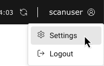
Рис. 7.22 Доступ к настройкам пользователя¶
Выберите в описании необходимую категорию настроек.
Нажмите
для настройки, которую следует отредактировать, и внести необходимые изменения (см. Рис. 7.23).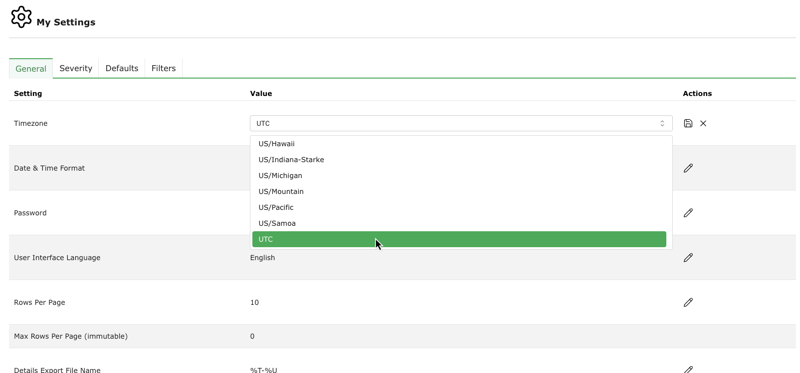
Рис. 7.23 Изменение настроек пользователя¶


Важными настройками являются:
- Категория Общий
- Часовой пояс
Выбор часового пояса, используемого для отображения информации. Устройство сохраняет всю информацию в часовом поясе UTC±00:00 внутри себя. Для отображения данных в течение часа необходим соответствующий выбор.
- Пароль
Здесь можно изменить пароль пользователя.
- Язык пользовательского интерфейса
Язык веб-интерфейса. По умолчанию использовались настройки браузера.
- Строков на странице
Количество ресурсов по умолчанию, отображаемое в списке страниц веб-интерфейса. Большое количество строк на странице увеличивает время загрузки. Пользовательские фильтры могут переопределить этот градиент (см. главу 7.3).
- Подробности Имя файла экспорта
Имя файла по умолчанию для экспортированных сведений о ресурсе. В качестве имени файла можно использовать следующие поля:
%C: дата создания в формате ГГГГМДД. Метки изменяются на текущую, если дата создания недоступна.
%c: время создания в формате ЧЧММСС. Изменяется на текущее время, если время создания недоступно.
%D: текущая дата в формате ГГГГМДД.
%F: имя используемого отчета (XML для списка и типов, отличных от отчетов).
%M: изменение даты в формате ГГГГМДД. Изменено на дату создания или на текущую дату, если изменение даты недоступно.
%m: время изменений в формате ЧЧММСС. Изменено на время создания или на текущее время, если время изменения недоступно.
%N: имя ресурса или связанной задачи для отчетов. Списки и типы без имени будут использовать тип (см. %T).
%T: тип ресурса, например «задача», «список_портов». Множественное число для страниц списка.
%t: текущее время в формате ЧЧММСС.
%U: уникальный идентификатор ресурса или «список» для списков из нескольких ресурсов.
%u: имя пользователя, вошедшего в систему в данный момент.
%%: знак валюты (%).
- Список имен файлов экспорта
Имя файла по умолчанию для экспортируемых списков ресурсов. Те же заполнители, что и для Подробности Имя файла экспорта можно использовать (см. выше).
- Имя файла отчета об экспорте
Имя файла по умолчанию для экспортируемых отчетов. Те же заполнители, что и для Подробности Имя файла экспорта можно использовать (см. выше).
- Автоматическое восстановление кэша
Включите или отключите уровень восстановления кэша. Если подряд выполняется несколько действий (например, удаление нескольких ресурсов) и включено ограничение на перестроение кэша, каждое действие запускает перестроение кэша, что замедляет процесс. В таких случаях восстановление кэша можно временно отключить.
- Категория Серьезность
- Динамическая серьезность
Выбор того, изменения ли тяжесть существующего результата, если изменения тяжесть основного ЖТ. В противном случае новая серьезность повлияет только на будущие кадры.
- Уровень серьезности по умолчанию
Заявление о серьезности по умолчанию. Его используют, если В.Т. не придает уровня серьезности.
- Категория По умолчанию
Выбор по умолчанию или записи для различных настроек.
- Категория Фильтры
Выбор фильтров по умолчанию для каждой страницы. Фильтры применяются автоматически при включении страницы.
7.8 Открытие руководства¶
Руководство можно открыть, в правом верхнем углу.

Кроме того, руководство можно открыть на любой странице, нажав кнопку в нижней части шкафа.
Откроется глава, соответствующая содержимому страницы.
7.9 Выход из веб-интерфейса¶
Выход из веб-интерфейса можно осуществить, наведя проводник на в правом верхнем углу и кнопках Выйти (видеть Рис. 7.24).
Если в веб-интерфейсе в течение определенного периода времени не выполняются никакие действия, происходит автоматический выход пользователя (см. главу 6.2.4.1.1). Тайм-аут по умолчанию составляет 15 минут.
Оставленное время до выхода пользователя из системы можно отобразить, наведя электрод на . Нажав тайм-аут можно сбросить.

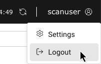
Рис. 7.24 Выход из веб-интерфейса¶